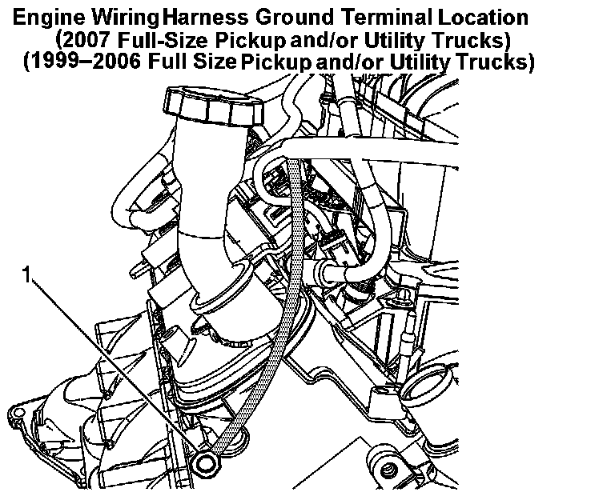
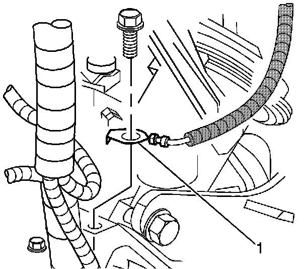

Engine Controls - MIL ON/Misfire/Misfire DTC's Set
Bulletin No.: 06-06-04-046Date: September 12, 2006
INFORMATION
Subject:
Information on Engine Misfire MIL/SES Light Illuminated or Flashing DTC P0300, P0301, P0302, P0303, P0304, P0305, P0306, P0307, P0308, P0420 or P0430
Models:
1999-2007 Cadillac, Chevrolet, GMC Full-Size Pickup and/or Utility Trucks
with 4.8L, 5.3L, 5.7L, 6.0L or 6.2L VORTEC GEN III, GEN IV, V-8 Engine (VINs V, C, T, Z, B, 3, M, 0, J, R, U, N, Y, K, 8 - RPOs LR4, LY2, LM7, L59, L33, LC9, LH6, LMG, LY5, L31, LQ4, LQ9, L76, LY6, L92)
with Active Fuel Management(TM) and E85 Flex Fuel
If you encounter vehicles that exhibit the above conditions, refer to SI for the appropriate DTC(s) set. If no trouble is found, the cause may be due to an ECM ground terminal that has corroded with rust over time. Inspect the main engine wiring harness ground terminal (G103) for this condition.

The wire terminal (G103) attaches either to the front or to the rear of the right side cylinder head, depending on the model year of the Full Size Pickup and/or Utility Trucks. If the ECM ground terminal has been found to be corroded, then follow the service procedure outlined in this bulletin to correct the corrosion issue.

Remove either the nut or bolt securing the main engine wiring harness ground terminal (G103) to the right cylinder head. Refer to the above illustration to determine where the ground is located on the vehicle (1).
Remove all rust from the ground terminal, the cylinder head and the retaining nut or bolt.
Position the main engine wiring harness ground terminal and install the nut or bolt.
Tighten:
Tighten the retaining nut or bolt to 16 N.m (12 lb ft).
Apply some type of electrical moisture sealant to protect the harness terminal from further corrosion.

Disclaimer